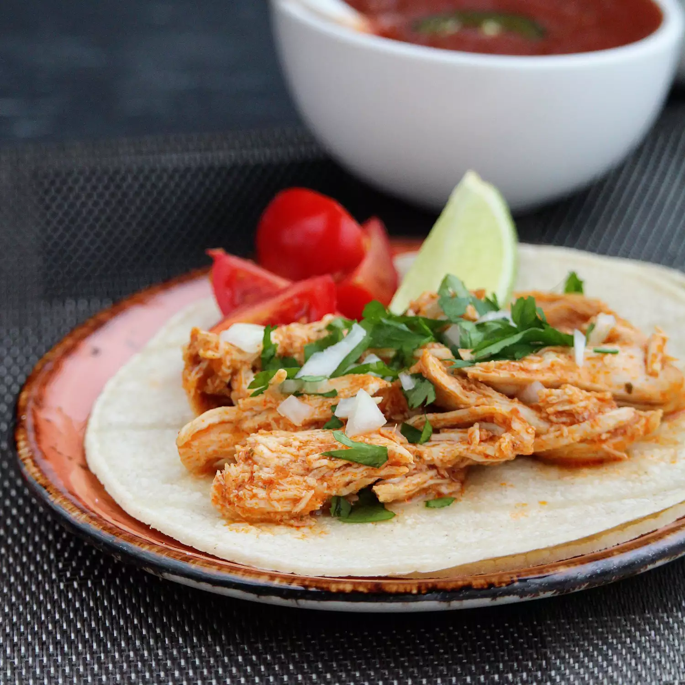

Salsa Chicken

Description
This salsa chicken Instant Pot recipe makes an easy weeknight meal even easier. Frozen chicken breasts are combined with taco seasoning and salsa for a tasty Mexican-themed meal. You can use the meat for tacos, burrito bowls, or as a topping for baked potatoes. So many possibilities! I used this the first night for chicken quesadillas. The second night I used it as a topping for baked potatoes with shredded cheese, pickled jalapeños, and sour cream.
Ingredients
- 1 pound frozen skinless, boneless chicken breast halves
- 1 (1 ounce) packet taco seasoning mix
- ½ cup salsa
- ½ cup low-sodium chicken broth
Steps
- Place chicken breasts in a multi-functional cooker (such as Instant Pot). Sprinkle all sides with taco seasoning. Pour salsa and chicken broth on top.
- Close and lock the lid. Select Poultry setting; set the timer for 15 minutes. Allow 10 to 15 minutes for pressure to build.
- Release pressure using the natural-release method according to manufacturer's instructions, about 20 minutes. Unlock and remove the lid.
- Shred chicken and serve as desired.